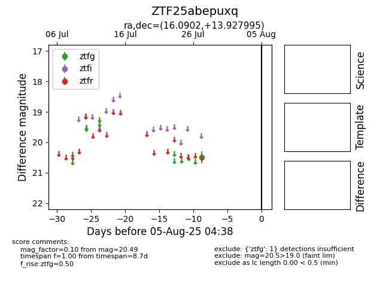

Target ZTF25abepuxq at 2025-08-05 04:38, see:
FINK: fink-portal.org/ZTF25abepuxq
Lasair: lasair-ztf.lsst.ac.uk/objects/ZTF25abepuxq
ALeRCE: alerce.online/object/ZTF25abepuxq
alt names
ZTF25abepuxq (ztf,fink)
coordinates:
equatorial (ra, dec) = (16.0902,+13.92800)
galactic (l, b) = (127.6978,-48.82413)
photometry
last ztfg=20.49
1 ztfg detections
